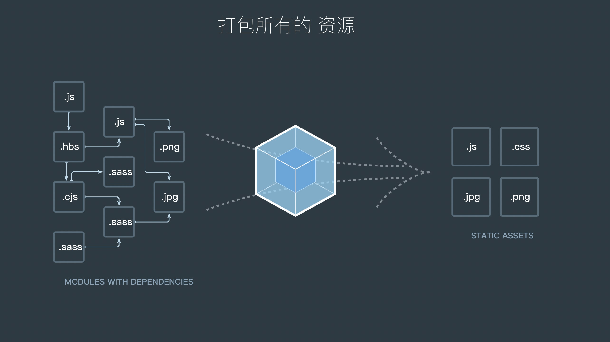
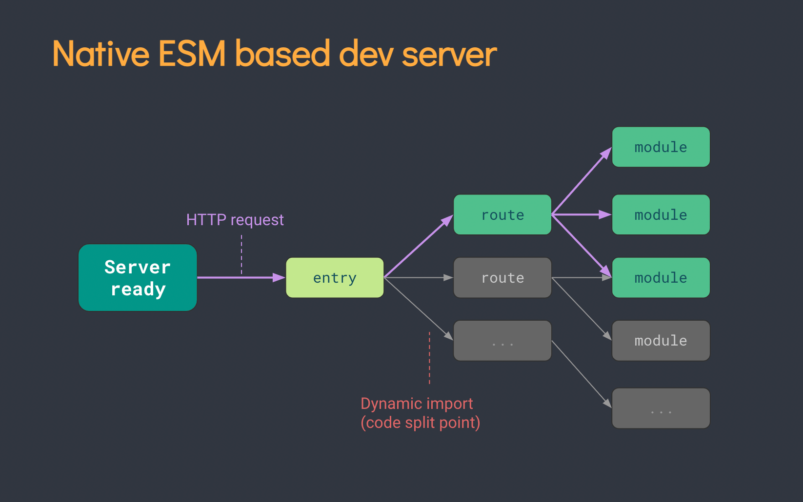
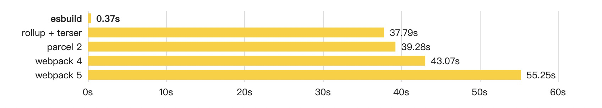
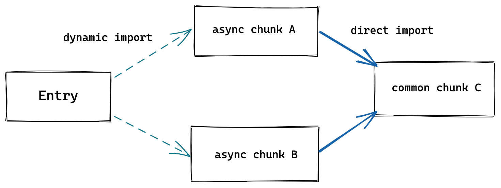
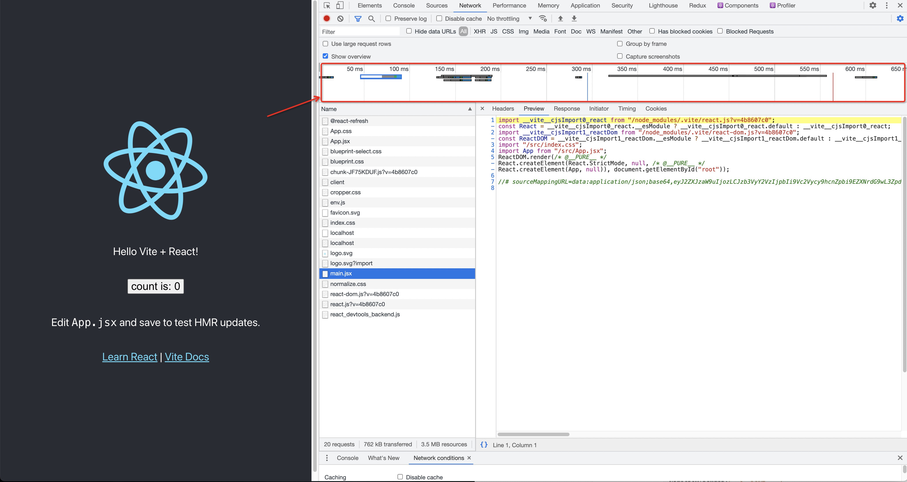

Vite 初探
一、Vite是什么？
Vite是一种新型的前端打包构建工具，由Vue的作者尤雨溪开发。
Vite的主要组成部分：
- 一个开发服务器，它基于 原生 ES 模块 提供了 丰富的内建功能，如速度快到惊人的 模块热更新（HMR）。
- 一套构建指令，它使用 Rollup 打包你的代码，并且它是预配置的，可以输出用于生产环境的优化过的静态资源。
浏览器兼容：
默认的构建目标浏览器是能 在 script 标签上支持原生 ESM 和 原生 ESM 动态导入。
传统浏览器可以通过官方插件 @vitejs/plugin-legacy 支持 —— 查看 构建生产版本 章节获取更多细节。
PS：2021-05-22的VueConf2021线上开发者大会其中有一个关于Vite的分享：https://mp.weixin.qq.com/s/tjIM1ayu_lrrVfpsk4slag
二、为什么会出现Vite，换言之，为什么会出现打包构建工具？
打包构建工具出现的原因：
由于前端项目的复杂度升级，代码规范和管理就必须要同步提升。
从代码规范层面出发，服务端选择了Common JS规范，客户端选择了AMD规范；
从语言层面出发，选择了ES Modules规范（自ES6提出）
模块化可以帮助我们更好的解决复杂应用开发过程中的代码组织问题，但是随着模块化思想的深入，前端应用又产生了新的问题，比如：
- ES Modules模块系统的环境兼容问题
- 零散的模块文件导致的频繁网络请求发送
- 模块化发散问题，HTML、CSS等资源文件也可能会模块化
- …
模块化对于开发过程而言是必要的。由此我们就需要在模块化的基础上去引入更好的方案和工具去解决上述的问题，因此，以Webpack为首的打包工具就出现了。
简言之，就是：项目越复杂 —-> 模块化规范出现 —-> 产生模块化的问题 —-> 打包构建工具出现
那么，问题来了，既然已经有了Webpack，为什么又出现了一个Vite？
Vite出现的原因：
我们先来看一下下面分别介绍Webpack和Vite的打包流程图，看看我们能从中得出什么结论？
Webpack打包构建流程图示：

Vite打包构建流程图示：

Vite原理图：

由上述图示，我们可以知道
Webpack打包过程：
- 识别入口文件
- 通过逐层识别模块依赖。（AMD、CommonJS、ES Modules，Webpack都会对其进行分析，来获取代码的依赖）
- 分析代码，转换代码，编译代码、输出代码
- 形成最终打包构建后的代码
Vite打包过程：
当我们声明一个script标签类型为module时。如
<script type="module" src="/src/main.js"></script>模块仅仅就是普通的含有js代码的文件而已，我们可以用import和export关键字对变量,对象的导出和导入，而这个机制在高级浏览器已经完全实现了。
MDN: https://developer.mozilla.org/zh-CN/docs/Web/HTML/Element/script
当浏览器解析保留了模块关键字的代码，从而会导致HTTP请求，Vite通过koa拦截了这些请求
1
2
3
4
5
6
7
8
9
10
11
12
13
14
15
16// http://localhost:3000/src/main.js请求main.js文件：
// main.js
import React from 'react';
import ReactDOM from 'react-dom';
import Routes from './routes.jsx';
import './styles/index.css';
ReactDOM.render(
<React.StrictMode>
<Routes />
</React.StrictMode>,
document.getElementById('root')
)浏览器请求到了main.js文件，检测到内部含有import引入的包，又会对其内部的 import 引用发起 HTTP 请求获取模块的内容文件
通过劫持浏览器的这些请求，并在后端进行相应的处理将项目中使用的文件通过简单的分解与整合，然后再返回给浏览器，Vite整个过程中没有对文件进行打包编译
这实际上就是以ES Modules的方式服务源码，让浏览器接管了打包程序的部分工作（Vite只需要在浏览器请求源码时进行转换并按需提供源码。根据情景动态导入的代码，即只在当前屏幕页面实际使用时才会被处理）
总的来说就是：通过Koa服务，实现了按需读取文件，省掉了打包步骤，以此来提升项目启动速度，这中间包含了一系列的处理，诸如解析代码内容、静态文件读取、浏览器新特性实践等等。Vite最创意的地方就是利用了浏览器的高级特性让开发体验变得更好
Webpack会先打包，然后启动开发服务器，请求服务器时直接给予打包后的结果；而Vite则是不打包文件代码，直接启动开发服务器，请求哪个模块，那么就会对哪个模块进行实时编译。（简言之，就是快速冷启动，按需编译）
从这个过程我们可以发现，它们之间的优缺点。
Vite较Webpack的优势：
其一，当冷启动开发服务器时，Webpack会基于打包器的方式是在提供服务前去急切地抓取和构建你的整个应用；而Vite通过一开始将应用中的模块区分为“依赖”和“源码”两类，并通过按需加载，改进了开发服务器的启动时间
“依赖”：大多数为纯JavaScript，并且在开发时不会变动。（一些较大的依赖，如组件库，处理的代价也很高。依赖通常也会以某些方式被拆分到大量小模块中。）
”源码“：通常包含一些并非直接是JavaScript的文件。需要转换（比如JSX、CSS等文件），并且可能时常被编辑。同时，也并非所有的源码都需要同时被加载。（比如基于路由拆分的代码模块）。
（Vite先来打包问题，只启动一台静态页面的服务器，对文件代码不打包，服务器会根据客户端的请求加载不同的模块处理，实现真正的按需加载）
其二，Webpack和Vite实现的语言不同。Webpack由node.js实现；Vite由Go语言实现（打包器预构建依赖比node.js快得多）
其三，Webpack热更新效率相比Vite热更新效率低下。
Webpack
当基于打包器启动时，编辑文件后将重新构建文件本身。显然我们不应该重新构建整个包，因为这样更新速度会随着应用体积增长而直线下降
一些打包器的开发服务器将构建内容存入内存，这样它们只需要在文件更改时使模块图的一部分失活，但它也仍需要整个重新构建并重载页面。这样代价很高，并且重新加载页面会消除应用的当前状态，所以打包器支持了动态模块热重载（HMR）：允许一个模块“热替换”它自己，而对页面其余部分没有影响。这大大改进了开发体验。然而，在实践中我们发现，即使是HMR更新速度也会随着应用规模的增长而显著下降。
（重新以当前修改的文件为入口重新打包build包，所有涉及到的依赖也都会被重新加载一次）
Vite
在Vite中，HMR是在原生ES Modules上执行的。当编辑一个文件时，Vite只需要精确地使已编辑的模块与其最近的HMR边界之间的链失效（大多数的时候只需要模块本身），使HMR更新始终快速，无论应用的大小
同时利用HTTP头来加速整个页面的重新加载（再次让浏览器为我们做更多事情）：源码模块的请求会根据304 Not Modified进行协商缓存，而依赖模块请求则会通过Cache-Control: max-age=31536000,immutable 进行强缓存，因此一旦被缓存它们将不需要再次请求。
（采用立即编译当前修改文件的办法。同时Vite还会使用缓存机制（http缓存 => Vite内置缓存），加载更新后的文件内容）
虽然Vite和Webpack的HMR实现机制是一样的，都是通过客户端和服务端建立socket连接，服务端有变化则通知客户端做出改变，但是他们本质上构建的方式决定了它们的效率和速度。
Vite较Webpack的劣势：
生态不如Webpack，尤其Webpack的loader和plugin十分的丰富
Vite目前生产环境（production）的构建，采用的Rollup
不使用ES Build的原因是：ES Build目前对于代码分割和CSS处理方面不太友好
有兴趣的可以自行查阅资料
Vite出道时间短，还没有广泛的使用，可能不是很成熟
esbuild
我们当前用于 Web 的构建工具比它们可能的速度慢 10-100 倍。esbuild bundler 项目的主要目标是开创一个构建工具性能的新时代，并在此过程中创建一个易于使用的现代 bundler。
主要特点：
- 无需缓存即可达到极速
- ES6 和 CommonJS 模块
- ES6 模块的 Tree shaking
- 用于 JavaScript 和 Go的API
- TypeScript和JSX语法
- Source maps
- Minification 压缩
- Plugins 插件

功能对比
| Vite 2.x | Webpack 5.x | |
|---|---|---|
| 支持Vue2 | 非官方支持 https://github.com/underfin/vite-plugin-vue2 |
支持：vue-loader@^15.0.0 |
| 支持Vue3 | 支持 | 支持：vue-loader@^16.0.0 https://github.com/Jamie-Yang/vue3-boilerplate |
| 支持React | 支持 | 支持：babel-loader |
| 支持TypeScript | 支持：ES Build（默认无类型检查） | 支持：ts-loader |
| 支持CSS预处理器 | 支持： https://vitejs.dev/guide/features.html#css-modules |
支持： https://vue-loader.vuejs.org/guide/css-modules.html |
| 支持静态文件 | 支持 | 支持 |
| 开发环境 | no-bundle native ESM(CJS => ESM) | bundle(CJS/UMD/ESM) |
| HMR | 支持 | 支持 |
| 生产环境 | Rollup | Webpack |
| Node API调用能力 | 支持 | 支持 |
综上，Vite具有快速冷启动、按需编译、模块热更新等开发环境的优良性质
三、如何使用Vite？
1. 项目搭建
兼容性注意：Vite需要Node.js版本 >=12.0.0
搭建Vite项目的方式：
脚手架搭建
- 通过
npm init @vitejs/app安装的方式
1
2
3
4
5
6
7
8
9
10
11
12
13
14
15
16
17
18
19
20
21
22
23// 这里我的node版本为14.x，npm版本为6.x。因此我就直接在终端执行
npm init @vitejs/app
// 然后按照提示的依次输入，按回车
? Project name: // 你的项目名称
? Select a framework: // 选择语言框架，这里我们选择react
❯ vanilla
vue
react
preact
lit-element
svelte
? Select a variant: // 选择变体，存在两种版本，js版和ts版，这里我们选择js版，即react
❯ react
react-ts
Scaffolding project in /Users/arvin/Desktop/vite/init-vite-app... // 项目文件位置路径
Done. Now run: // 创建完毕，依次执行如下命令
cd init-vite-app
npm install
npm run dev- 通过直接赋予预设模版的方式
npm init @vitejs/app my-vue-app --template vue
1
2
3
4
5
6
7
8
9
10
11// npm init @vitejs/app 项目名称 --template 预设模版框架名称
npm init @vitejs/app init-template-vite-app --template react
Scaffolding project in /Users/arvin/Desktop/vite/init-template-vite-app... // 项目文件位置路径
Done. Now run: // 创建完毕，依次执行如下命令
cd init-template-vite-app
npm install
npm run dev其他预设模版详情见https://github.com/vitejs/vite/tree/main/packages/create-app
- 通过
手动创建
1 | // 创建项目文件夹 |
2. 项目文件及目录介绍
1 | // 代码文件目录结构 |
不同之处：
index.html在项目最外层而不是在public文件夹内。（有意为之：在开发服务期间Vite是一个服务器，而index.html是该Vite项目的入口文件）。
Vite 将
index.html视为源码和模块图的一部分。Vite 解析<script type="module" src="...">，这个标签指向你的 JavaScript 源码。甚至内联引入 JavaScript 的<script type="module" src="...">和引用 CSS 的<link href>也能利用 Vite 特有的功能被解析。另外，index.html中的 URL 将被自动转换，因此不再需要%PUBLIC_URL%占位符了。与静态HTTP服务器类似，Vite也有“根目录”的概念，即文件被提供的位置。你会看到它在整个文档中用
<root>表示。源码中的绝对URL路径将以项目的“根”作为基础来解析，因此你可以像在普通的静态文件服务器上一样编写代码。Vite还能够处理依赖关系，解析处于根目录外的文件位置，这使得它即使在基于monorepo的方案中也十分有用。Vite也支持多个.html作为入口点的多页面应用模式。
指定替代根目录：以当前工作目录作为根目录启动开发服务器。你也可以通过vite serve some/sub/dir来指定一个替代的根目录。
命令行界面：
在安装了Vite的项目中，可以在npm scripts中使用vite可执行文件，或者直接使用npx vite运行它。
下面是通过脚手架创建的Vite项目中默认的npm scripts:
1 | { |
3. 项目需求
我们的项目可能会需要哪些配置呢？
浏览器兼容配置，浏览器版本以及浏览器种类的差异可能导致我们的代码在不同的浏览器或者不同的版本下显示的与预想的不同。
(Vite 自动会生成一个轻量级的 动态导入 polyfill 来抹平二者差异。)
资源文件的处理 （Vite内置支持了JSX、less/sass/stylus…等文件，不需要另外下载loader进行解析，但是需要下载对应的预处理器，比如less，就需要npm install -D less）
自动刷新页面以及热更新
Tree Shaking（即将项目中没有用到的代码移除，缩减打包体积）
Code Splitting（即代码拆分，把代码分离到不同的bundle中，然后按需加载或并行加载这些文件，可减少加载的时间）
动态加载、预加载等
4. 功能介绍
JSX
.jsx 和 .tsx 文件都可以开箱即用。JSX 的转译同样是通过 esbuild，默认为 React 16 形式，React 17 形式的 JSX 在 esbuild 中的支持请看 这里.
CSS
导入.css文件将会把内容插入到<style>标签中，同时也带有HMR支持。也能够以字符串的形式检索处理后的、作为其模块默认导出的CSS
@import内联和重命名
Vite通过postcss-import预配置支持了CSS@import内联，Vite的路径别名也遵从CSS@import。换言之，所有CSS url()引用，即使导入的文件在不同的目录中，也总是自动变基，以确保正确性。
Sass和Less文件也支持@import别名和URL重命名
PostCSS
如果项目包含有效的PostCSS配置（任何受postcss-load-config支持的格式，例如postcss.config.js）,它将会自动应用于所有已导入的CSS。
CSS Modules
任何.module.css为后缀名的CSS文件都被认为是一个CSS modules文件。导入这样的文件会返回一个相应的模块对象。
1 | /* |
1 | import classes from './example.module.css'; |
CSS预处理器
Vite 也同时提供了对 .scss, .sass, .less, .styl 和 .stylus 文件的内置支持。
没有必要为他们安装特定的 vite 插件，但相应的预处理器依赖本身必须安装
1 | // .scss and .sass |
JSON导入
支持JSON具名导入
1 | // 导入整个对象 |
静态资源处理
详情请见：https://www.vitejs.net/guide/assets.html
public目录（目录默认是 <root>/public，但可以通过 publicDir 选项 来配置。）
- 不会被源码引用
- 必须保持原有文件名
- 不想为了获取URL而首先导入该资源
请注意：
- 引入 public 中的资源永远应该使用根绝对路径 - 举个例子，public/icon.png 应该在源码中被引用为 /icon.png。
public中的资源不应该被 JavaScript 文件引用。
支持URL导入
导入一个静态资源会返回解析后的 URL：
1 | // 例如，imgUrl 在开发时会是 /img.png，在生产构建后会是 /assets/img.2d8efhg.png。 |
添加一些特殊的查询参数可以更改资源被引入的方式：
1 | // 显式加载资源为一个 URL |
Glob 导入
Vite 支持使用特殊的 import.meta.glob 函数从文件系统导入多个模块：
1 | const modules = import.meta.glob('./dir/*.js') |
以上将会被转译为下面的样子：
1 | // vite 生成的代码 |
你可以遍历 modules 对象的 key 值来访问相应的模块：
1 | for (const path in modules) { |
匹配到的文件将通过动态导入默认懒加载，并会在构建时分离为独立的 chunk。如果你倾向于直接引入所有的模块（例如依赖于这些模块中的副作用首先被应用），你可以使用 import.meta.globEager 代替：
1 | const modules = import.meta.globEager('./dir/*.js') |
以上会被转译为下面的样子：
1 | // vite 生成的代码 |
请注意：
- 这只是一个 Vite 独有的功能而不是一个 Web 或 ES 标准
- 该 Glob 模式会被当成导入标识符：必须是相对路径（以
./开头，相对于项目根目录解析），从依赖中来的 Glob 不被支持。 - Glob 导入只能使用默认导入（无法使用按名导入，也无法使用
import * as ...）。
5. 构建优化
下面所罗列的功能会自动应用为构建过程的一部分，没有必要在配置中显式地声明，除非你想禁用它们。
动态导入 Polyfill
Vite 使用 ES 动态导入作为代码分割的断点。生成的代码也会使用动态导入来加载异步 chunk。然而浏览器对原生 ESM 动态导入的功能落地比对 type="module" script 块支持要晚，它们两个功能之间存在着浏览器兼容性差异。Vite 自动会生成一个轻量级的 动态导入 polyfill 来抹平二者差异。
如果你确定你的构建目标只有支持原生动态导入的浏览器，你可以通过 build.polyfillDynamicImport 显式地禁用这个功能。
CSS 代码分割
Vite 会自动地将一个异步 chunk 模块中使用到的 CSS 代码抽取出来并为其生成一个单独的文件。这个 CSS 文件将在该异步 chunk 加载完成时自动通过一个 <link> 标签载入，该异步 chunk 会保证只在 CSS 加载完毕后再执行，避免发生 [FOUC](https://en.wikipedia.org/wiki/Flash_of_unstyled_content#:~:text=A flash of unstyled content,before all information is retrieved.) 。
如果你更倾向于将所有的 CSS 抽取到一个文件中，你可以通过设置 build.cssCodeSplit 为 false 来禁用 CSS 代码分割。
预加载指令生成
Vite 会为入口 chunk 和它们在打包出的 HTML 中的直接引入自动生成 <link rel="modulepreload"> 指令。
异步 Chunk 加载优化
在实际项目中，Rollup 通常会生成 “共用” chunk —— 被两个或以上的其他 chunk 共享的 chunk。与动态导入相结合，会很容易出现下面这种场景：

在无优化的情境下，当异步 chunk A 被导入时，浏览器将必须请求和解析 A，然后它才能弄清楚它首先需要那个共用 chunk C。这会导致额外的网络往返：
1 | Entry ---> A ---> C |
Vite 将使用一个预加载步骤自动重写代码，来分割动态导入调用，因而当 A 被请求时，C 也将 同时 被获取到：
1 | Entry ---> (A + C) |
C 也可能有更深的导入，在未优化的场景中，这甚至会导致额外网络往返。Vite 的优化将跟踪所有的直接导入，无论导入深度如何，都完全消除不必要的往返。
6. 构建生产版本
当需要将应用程序部署到生产环境时，只需运行 vite build 命令。默认情况下，它使用 <root>/index.html 作为构建入口点，并生成一个适合通过静态部署的应用程序包。
浏览器兼容性
生产版本假设浏览器对 原生 ES 模块动态导入 有基本支持。默认情况下，所有代码构建都会以 支持原生 ESM script 标签的浏览器 为目标。
一个轻量级的 动态导入 polyfill 也会同时自动注入。
你也可以通过 build.target 配置项 指定构建目标，最低支持 es2015。
- Chrome >=61
- Firefox >=60
- Safari >=11
- Edge >=16
请注意，默认情况下 Vite 只处理语法转译，并 不默认包含任何 polyfill。你可以前往 Polyfill.io 查看，这是一个基于用户浏览器 User-Agent 字符串自动生成 polyfill 包的服务。
传统浏览器可以通过插件 @vitejs/plugin-legacy 来支持，它将自动生成传统版本的 chunk 和其相应 ES 语言特性方面的 polyfill。兼容版的 chunk 只会在不支持原生 ESM 的浏览器中有按需加载。
公共基础路径
- 相关内容：静态资源处理
如果你正在嵌套的公共路径下部署项目，可以简单指定一个 build.base 配置项 然后所有资源的路径都将据此重写。这个选项也可以通过命令行参数指定，例如 vite build --base=/my/public/path/。
由 JS 导入的资源路径，CSS 中的 url() 引用，和 .html 文件中的资源引用在构建过程中都会自动调整以适配此选项。
例外情况是需要动态连接 url。在这种情况下，你可以使用全局注入的 import.meta.env.BASE_URL 变量，它将是 公共基础路径。注意这个变量在构建中是被静态替换的所以它必须是原本的样子（例如 import.meta.env['BASE_URL'] 是无效的）
自定义构建
构建过程可以通过多种 构建配置选项 来自定义。特别地，你可以通过 build.rollupOptions 直接调整底层的 Rollup 选项：
1 | // vite.config.js |
例如，你可以使用仅在构建期间应用的插件来指定多个 Rollup 输出。
多页面应用模式
假设你有下面这样的项目文件结构
1 | ├── package.json |
在开发中，简单地导航或链接到 /nested/ - 将会按预期工作，就如同一个正常的静态文件服务器。
在构建中，你要做的只有指定多个 .html 文件作为入口点：
1 | // vite.config.js |
库模式
当你开发面向浏览器的库时，你可能会将大部分时间花在该库的测试/演示页面上。使用 Vite，你可以使用 index.html 来获得如丝般顺滑的开发体验。
当需要构建你的库用于发布时，请使用 build.lib 配置项，请确保将你不想打包进你库中的依赖进行外部化，例如 vue 或 react：
1 | // vite.config.js |
运行 vite build 配合如上配置将会使用一套 Rollup 预设，为发行该库提供两种构建格式：es 和 umd（在 build.lib 中配置的）：
1 | $ vite build |
推荐你的库中 package.json 的采用如下格式:
1 | { |
7. 环境变量与模式
环境变量
Vite 在一个特殊的 import.meta.env 对象上暴露环境变量。这里有一些普遍适用的内建变量：
import.meta.env.MODE:string应用运行基于的 模式。import.meta.env.BASE_URL:string应用正被部署在的 base URL。它由base配置项 决定。import.meta.env.PROD:boolean应用是否运行在生产环境import.meta.env.DEV:boolean应用是否运行在开发环境 (永远与import.meta.env.PROD相反)
生产环境替换
在生产环境中，这些环境变量会在构建时被静态替换，因此请在引用它们时使用完全静态的字符串。动态的 key 将无法生效。例如，动态 key 取值 import.meta.env[key] 是无效的。
它还将替换出现在 JavaScript 和 Vue 模板中的字符串。这应该是比较罕见的情况，但它可能是不小心为之。有一些方法可以避免这个问题:
- 对于 JavaScript 字符串，你可以在相应位置上使用一个 unicode 序列值，例如：
'import.meta\u200b.env.MODE'。 - 对于 Vue 模板或其他编译到 JavaScript 字符串的 HTML，你可以使用 `` 标签，例如：
import.meta.<wbr>env.MODE。
.env 文件
Vite 使用 dotenv 在你的项目根目录下从以下文件加载额外的环境变量:
1 | .env // 所有情况下都会加载 |
加载的环境变量也会通过 import.meta.env 暴露给客户端源码。
为了防止意外地将一些环境变量泄漏到客户端，只有以 VITE_ 为前缀的变量才会暴露给经过 vite 处理的代码。例如下面这个文件中：
1 | DB_PASSWORD=foobar |
只有 VITE_SOME_KEY 会被暴露为 import.meta.env.VITE_SOME_KEY 提供给客户端源码，而 DB_PASSWORD 则不会。
安全警告
.env.*.local文件应是本地的，可以包含敏感变量。你应该加上.local到你的.gitignore以避免他们被检出到 git。- 由于暴露在 Vite 源码中的任何变量都将最终出现在客户端包中，
VITE_*变量应该不包含任何敏感信息。
模式
默认情况下，开发服务器 (serve 命令) 运行在 development （开发）模式，而 build 命令运行在 production （生产）模式。
这意味着当执行 vite build 时，它会自动加载 .env.production 中可能存在的环境变量：
1 | // .env.production |
在你的应用中，你可以使用 import.meta.env.VITE_APP_TITLE 作为渲染标题。
然而重要的是，要理解模式是一个更广泛的概念，而不仅仅是开发和生产。一个典型的例子是，你可能希望有一个 “staging” 模式，它应该具有类似于生产的行为，但环境变量与生产环境略有不同。
你可以通过传递 --mode 选项标志来覆盖命令使用的默认模式。例如，如果你想为我们假设的 staging 模式构建应用:
1 | vite build --mode staging |
为了使应用实现预期行为，我们还需要一个 .env.staging 文件：
1 | // .env.staging |
现在，staging 应用应该具有类似于生产的行为，但显示的标题与生产环境不同。
8. 服务端渲染（SSR）
PS：SSR 支持还处于试验阶段，你可能会遇到 bug 和不受支持的用例
详情请见：https://www.vitejs.net/guide/ssr.html
9. 其他配置请见官网指南
https://www.vitejs.net/config/#root
四、Vite实现的原理是什么？
上面第二点我们简单说明了Vite出现的原因和打包构建过程。这里我们来详细讲解一下Vite到底做了哪些事？
首先，我们按照上面的操作创建一个新的项目，运行npm run dev启动项目，然后我们在浏览器打开页面，打开浏览器控制台，刷新。
这个时候，我们可以看到

重写引入模块路径前面加上/node_modules/，重写后浏览器会再次发送请求。
1
2
3
4
5
6
7
8
9
10
11
12
13
14
15
16
17
18
19
20
21
22
23
24
25// 原main.jsx文件：
import React from 'react'
import ReactDOM from 'react-dom'
import './index.css'
import App from './App'
ReactDOM.render(
<React.StrictMode>
<App />
</React.StrictMode>,
document.getElementById('root')
)
// 通过vite构建后请求的main.jsx文件
import __vite__cjsImport0_react from "/node_modules/.vite/react.js?v=4b8607c0";
const React = __vite__cjsImport0_react.__esModule ? __vite__cjsImport0_react.default : __vite__cjsImport0_react;
import __vite__cjsImport1_reactDom from "/node_modules/.vite/react-dom.js?v=4b8607c0";
const ReactDOM = __vite__cjsImport1_reactDom.__esModule ? __vite__cjsImport1_reactDom.default : __vite__cjsImport1_reactDom;
import "/src/index.css";
import App from "/src/App.jsx";
ReactDOM.render(/* @__PURE__ */
React.createElement(React.StrictMode, null, /* @__PURE__ */
React.createElement(App, null)), document.getElementById("root"));
//# sourceMappingURL=
五、使用Vite出现的问题
六、Vite示例
七、本文出现的各种技术的官网地址：
Vite: https://www.vitejs.net/
Webpack: https://webpack.docschina.org/
esbuild: https://esbuild.github.io/
Rollup: https://www.rollupjs.com/
Babel: https://www.babeljs.cn/